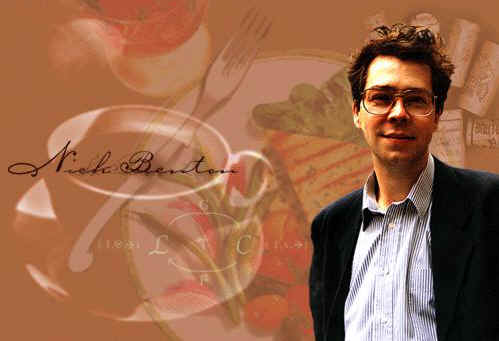

Nick Benton

Nick Benton |
|

I am a researcher at Microsoft Research in Cambridge, working in the Programming Principles and Tools group.
I have been in Cambridge since 1984, when I came up to read Mathematics at Pembroke College. I then took the postgraduate Diploma in Computer Science and stayed in the Computer Laboratory to do my PhD. This was followed by an SERC Research Fellowship and then by a Research Associateship on the ESPRIT Basic Research Action LOMAPS. I have been a Bye-Fellow of Queens' College since 1995.
From July 1996 to August 1998, I was the Senior Research Scientist at the Cambridge R&D Lab of Persimmon IT Inc (a small, exciting, and now bankrupt) dotcom. I joined Microsoft Research (which is large, exciting and not bankrupt) in September 1998.